Lensa Kata
Product Research
UX Research
Team Lead
Lensa Kata is a gamification-based educational platform that focuses on children's literacy development, particularly on story comprehension, vocabulary enrichment, and creative writing.
Pain Points
Illiteracy
The literacy rate of elementary school children in Indonesia is still low.
Disinterest
Children are more interested in playing games or social media than reading.
Lack of Creativity
Students have difficulty expressing creative ideas from textual information.
Solutions
Baca Cerita
Get users used to reading stories, finding keywords, and understanding the meaning behind the story.
Main SPOK
Challenge users to construct sentences with the structure of Subject, Predicate, Object, and Description.
Mengarang
Provide space for users to create creative stories based on stories they have read previously.
Cerita Rakyat
Introduce users to local folklore and legends to help them connect with cultural stories, values and meaning.
Gamification
We used Octalysis Framework Theory to implement effective gamification ideas that suit this platform.
Empowerment
Explore users creativity by combining elements from two or more stories into new imaginative narrative experiences.
Accomplishment
Implement Leaderboard system, motivating users to compete achieve higher scores and consistency.
Epic Meaning & Calling
Attract first-time users through Tutorials & Hints guiding them to understand mechanics purpose and achieve better results consistently.
Loss & Avoidance
Encourage users to maintain streaks by completing tasks consistently and maximizing potential scores.
Social Influence
Enable users to comment on others creations fostering interaction feedback collaboration in platform ecosystem.
Results